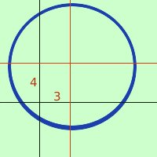

|
x2 + y2 - 6x - 8y - 11 = 0 abbia il centro nell'origine degli assi Le coordinate del centro sono C=(3,4) quindi a = 3 b = 4  Ho le formule Y = y - b cioe' Y = y - 4 Pero' io nell'equazione ho le vecchie coordinate quindi devo usare y = Y + 4 sostituisco le nuove coordinate nell'equazione della circonferenza al posto delle vecchie (X+3)2 + (Y+4)2 - 6(X+3) - 8(Y+4) - 11 = 0 sviluppo i calcoli X2 + 6X + 9 + Y2 + 8Y + 16 - 6X - 18 - 8Y - 32 - 11 = 0 sommo ed ottengo X2 + Y2 - 36 = 0 o meglio X2 + Y2 = 36 |